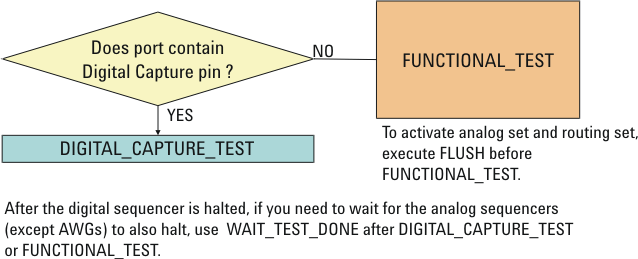

Executing Multi-port Test
The multi-port test to be executed is specified by the start label in the Testsuite dialog window. A multi-port burst label must be used as the main label.
The multi-port test is executed by the same APIs as for the non-multi-port test. Use the DIGITAL_CAPTURE_TEST API if a digital capture pin is included in the multi-port test. Otherwise, use the FUNCTIONAL_TEST API.

Note Before the FUNCTIONAL_TEST API, execute the
FLUSH API if you activate the primary analog set specified in the
Testsuit dialog window or activate the hardware settings specified by the
ANALOG_STATUS and ROUTING_STATUS APIs. For
DIGITAL_CAPTURE_TEST, you can always omit FLUSH
because DIGITAL_CAPTURE_TEST executes FLUSH
internally.
- FUNCTIONAL_TEST or DIGITAL_CAPTURE_TEST waits until the digital sequencer is halted. If you need to wait for the analog sequencers except the AWGs to also halt, execute WAIT_TEST_DONE after FUNCTIONAL_TEST or DIGITAL_CAPTURE_TEST.
- In the PMU_VFIM, PMU_IFVM, or DPS_VFIM API, you can execute a multi-port test in order to generate the digital vectors before the DC test, by specifying "FTST"in the preAction member function. The multi-port test results do not affect the DC test pass/fail judgment of the TEST API.